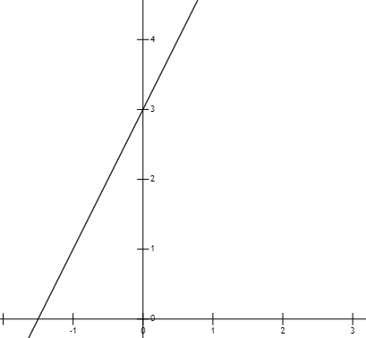
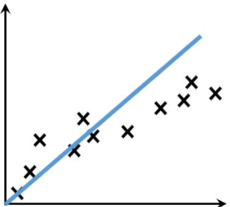
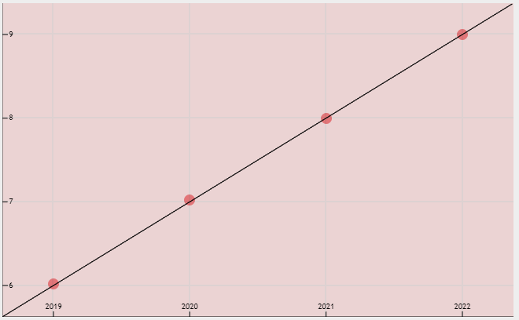

构建线性回归模型
本节讲解如何构建线性回归算法中的“线性模型”，所谓“线性”其实就是一条“直线”。因此，本节开篇首先普及一下初中的数学知识“一次函数”。
函数中斜率 k 与 截距 b 控制着“直线”的“旋转”与“平移”。如果斜率 k 逐渐减小，则“直线”会向着“顺时针”方向旋转，为 k= 0 的时候与 x 轴平行。截距 b 控制“直接”的上下平移，b 为正数则向上平移，b 为负数则表示向下平移。
在机器学习中斜率 k 通常用 w 表示，也就是权重系数，因此“线性方程”通过控制 w 与 b 来实现“直线”与数据点最大程度的“拟合”。如下图（黑色 x 号代表数据样本）所示：
首先年龄、时间是一组连续性的数据，也就是因变量随着自变量规律性地连续增长，显然它是一个“回归问题”。下面把上述数据以二维数组的形式表示出来，构建一个数据集，如下所示：
从上述函数图像可以看出，直线对数据样本恰好“拟合”。这是最标准的拟合直线，通过它就可以“预测”出小亮明年的年龄了。上述示例就构建了一个简单的的“线性模型”。读到这里你会惊叹“怎么如此简单”，其实线性模型就是这么简单。对于机器学习而言，最关键的就是“学习”，在大量的数据中，通过不断优化参数，找到一条最佳的拟合“直线”，最终预测出一个理想的结果。
一次函数
一次函数就是最简单的“线性模型”，其直线方程表达式为 y = kx + b，其中 k 表示斜率，b 表示截距，x 为自变量，y 表示因变量。下面展示了 y = 2x + 3 的函数图像：

图1：函数图像y=2x+3
图1：函数图像y=2x+3
函数中斜率 k 与 截距 b 控制着“直线”的“旋转”与“平移”。如果斜率 k 逐渐减小，则“直线”会向着“顺时针”方向旋转，为 k= 0 的时候与 x 轴平行。截距 b 控制“直接”的上下平移，b 为正数则向上平移，b 为负数则表示向下平移。
在机器学习中斜率 k 通常用 w 表示，也就是权重系数，因此“线性方程”通过控制 w 与 b 来实现“直线”与数据点最大程度的“拟合”。如下图（黑色 x 号代表数据样本）所示：

图2：线性拟合
图2：线性拟合
线性方程不能完全等同于“直线方程”，因为前者可以描述多维空间内直接，而后者只能描述二维平面内的 x 与 y 的关系。
构建线性模型
在线性回归问题中数据样本会呈现“线性”分布的态势，因此我们使用“线性方程”来最大程度的“拟合数据”。线性方程预测的结果具有连续性，下面通过示例简单说明：小亮今年 8 岁，去年 7 岁，前年 6 岁，那么他明年几岁呢？估计你闭着眼都能想到答案，但是我们要从机器学习的角度去看待这个问题。首先年龄、时间是一组连续性的数据，也就是因变量随着自变量规律性地连续增长，显然它是一个“回归问题”。下面把上述数据以二维数组的形式表示出来，构建一个数据集，如下所示：
[[2021,8], [2020,7], [2019,6]]我们知道两个点就可以确定一条“直线”，因此将两组数据带入 y = kx + b，最终求得“线程方程”：
y = x - 2013上述函数就是所谓的“假设函数”，通过它即可实现对结果的预测。这个函数的图像如下所示：

图3：假设函数图像
图3：假设函数图像
从上述函数图像可以看出，直线对数据样本恰好“拟合”。这是最标准的拟合直线，通过它就可以“预测”出小亮明年的年龄了。上述示例就构建了一个简单的的“线性模型”。读到这里你会惊叹“怎么如此简单”，其实线性模型就是这么简单。对于机器学习而言，最关键的就是“学习”，在大量的数据中，通过不断优化参数，找到一条最佳的拟合“直线”，最终预测出一个理想的结果。
提示：上述示例是一个理想化的“线性模型”，在实际应用中要复杂的多，不过“万变不离其宗”。
机器学习是一门数学、统计学、计算机科学的结合技术，因此它有着独特的知识体系，比如会将数据集分为“训练集”与“测试集”，而且还会通过“损失函数”来不断优化预测结果，关于这些知识会在后需内容详细介绍。关注公众号「站长严长生」，在手机上阅读所有教程，随时随地都能学习。内含一款搜索神器，免费下载全网书籍和视频。

微信扫码关注公众号